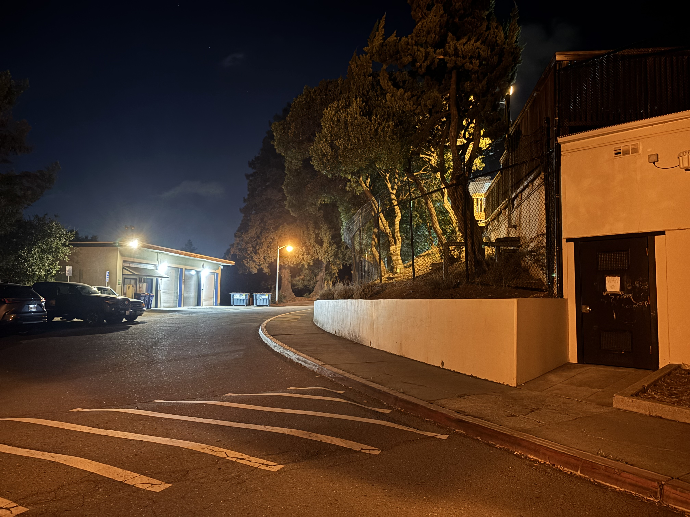
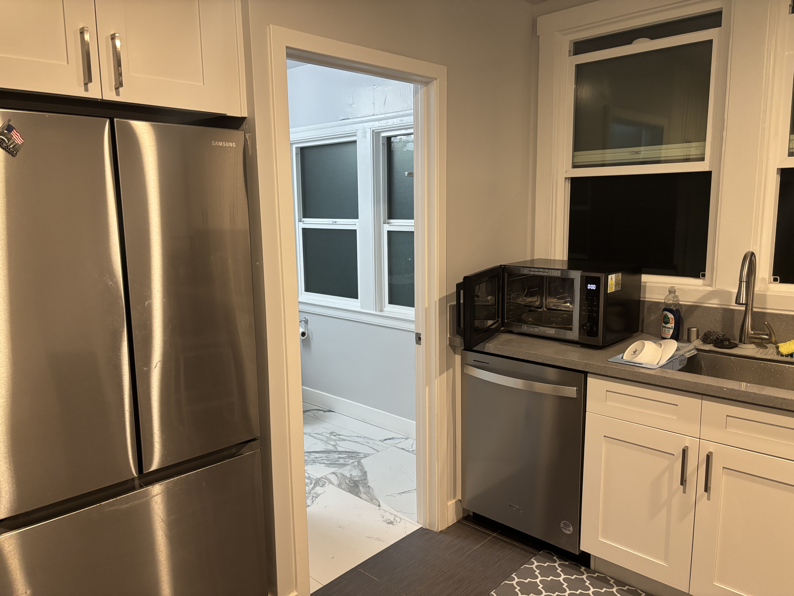
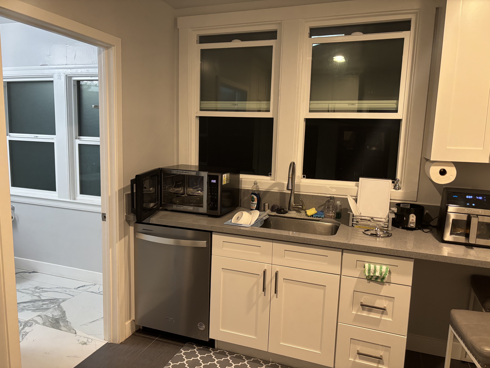
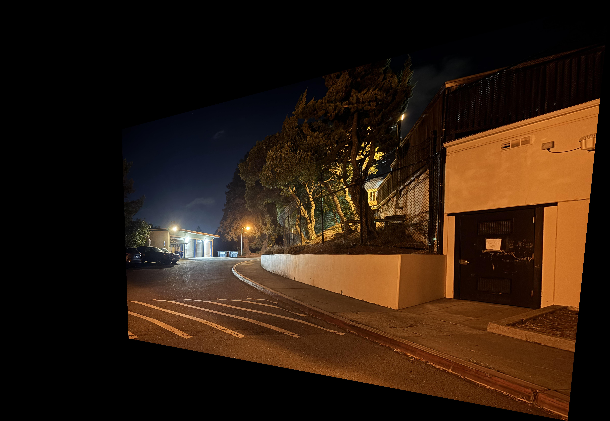
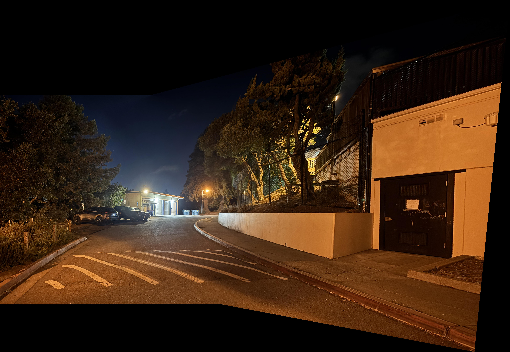
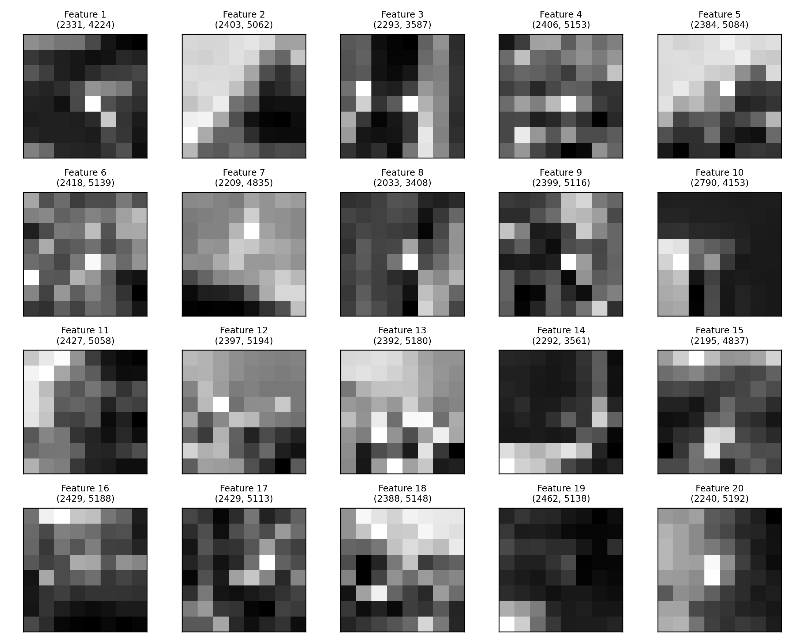
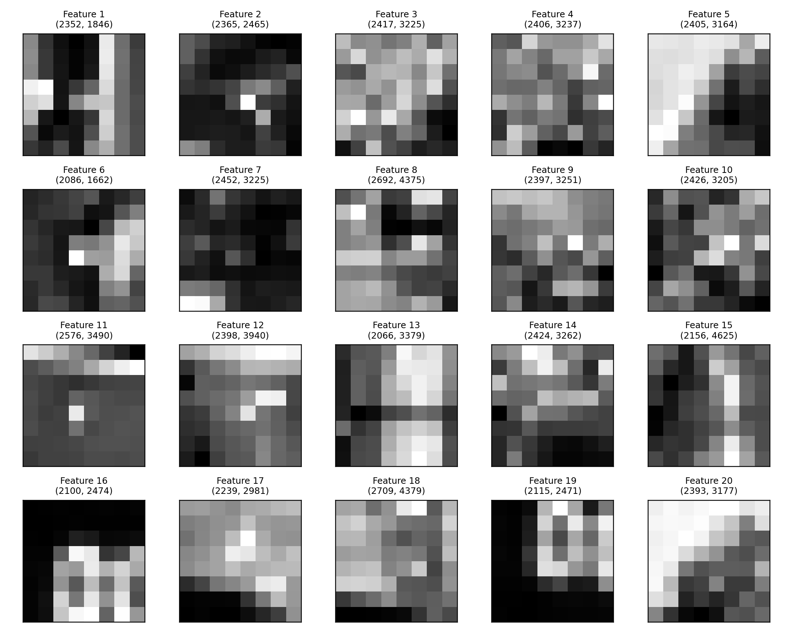
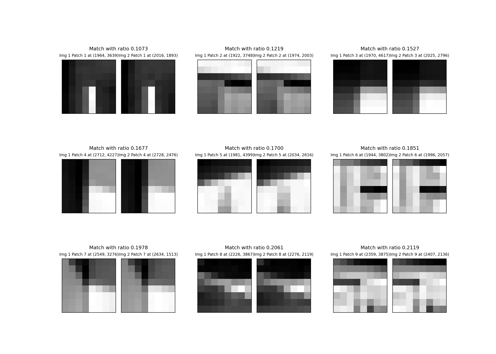

I implement planar homography estimation from point correspondences, inverse warping with
both nearest-neighbor and bilinear interpolation, and simple feather blending to stitch pairs
of photos into panoramas. The code builds the DLT system for a homography, solves it via the
smallest eigenvector of \(A^\top A\), predicts the canvas bounds by transforming image corners,
and blends overlapping regions with a distance-to-edge weight (gamma falloff).
A.1 Shoot & Digitize
I captured three scenes with significant overlap: Hearst, Parking Lot, and Kitchen.
Each set consists of a view that I warp and one that I warp to.
Hearst — left
Hearst — right

Parking — left
Parking — right

Kitchen — left

Kitchen — right
A.2 Recover Homographies
I form the standard DLT matrix with two rows per correspondence \((x,y)\!\leftrightarrow\!(u,v)\), then
compute the homography as the eigenvector associated with the smallest eigenvalue of \(A^\top A\)
(reshaped to \(3\times3\) and normalized so \(H_{33}=1\)).
# Row pattern used (u,v from right image; x,y from left image):
[x, y, 1, 0, 0, 0, -u*x, -u*y, -u]
[0, 0, 0, x, y, 1, -v*x, -v*y, -v]
Warping uses inverse mapping: for each pixel on the output canvas, map back through
\(H^{-1}\) to sample the source. I implemented the warp using both nearest-neighbor and
bilinear interpolation.
The canvas bounds are computed by transforming the left image corners with \(H\), then unioning
with the right image extent to set (min_x,min_y,max_x,max_y).
Interpolation comparison
Hearst — warped left (nearest neighbor)
Hearst — warped left (bilinear)
Parking — warped left (nearest neighbor)

Parking — warped left (bilinear)
Kitchen — warped left (nearest neighbor)
Kitchen — warped left (bilinear)
Notes on speed
Nearest neighbor is certainly faster
Nearest Neighbor vs Bilinear times:
Hearst: NN ~35s, Bilinear ~100s
Parking: NN ~8.8s, Bilinear ~18s
Kitchen: NN ~17s, Bilinear ~36s
To be honest I can't really notice any difference between the nearest neighbor and bilinear produced images.
A.4 Mosaics + Feather Blending
I assemble panoramas by placing the right image on a canvas, warping the left image with the
recovered \(H\), and blending where they overlap using a per-pixel alpha based on distance to
the image border. The alpha is (distance_to_edge / max_distance) ^ gamma. Finally, I normalize by the sum of alphas
to avoid seams.
Scene 1 — Hearst
Panorama (nearest neighbor sampling)
Panorama (bilinear sampling)
Scene 2 — Parking Lot

Panorama (nearest neighbor sampling)
Panorama (bilinear sampling)
Scene 3 — Kitchen
Panorama (nearest neighbor sampling)
Panorama (bilinear sampling)
Blending details
Alpha per image: distance-transform–style falloff from center to edges (implemented as min-distance to border).
Final pixel = weighted average by alpha sums; prevents hard seams in overlap.
Gamma controls edge softness; I used ~1.5–1.8.
Part B.1 — Harris Corner Detection & ANMS
Harris corner detection finds repeatable “interest points” by looking for pixels where intensity changes strongly in two directions. After computing a corner strength map, we keep only the local peaks. However, raw peaks often clump together in textured areas, so we apply Adaptive Non-Maximal Suppression (ANMS): for each detected corner we measure how far you’d have to go to find a noticeably stronger one, and treat that distance as its “radius.” Sorting by this radius and keeping the top N gives a set of points that are both strong and well spread out across the image.
Top-1000 corners after ANMS (left image).Top-1000 corners after ANMS (right image).
Part B.2 — Feature Descriptor Extraction
Around each ANMS-selected corner, a 40 × 40 pixel window is cropped,
blurred slightly, and resampled to an 8 × 8 patch.
Each patch vector \(p\) is then bias / gain normalized to achieve illumination invariance:
\(p' = \dfrac{p - \mu(p)}{\sigma(p) + \epsilon}\)
Around each ANMS point, we capture a compact description of the local appearance by cropping a 40×40 pixel window, downsampling it to 8×8, and normalizing it to remove overall brightness and contrast. The result is a 64-value vector that summarizes the coarse pattern of edges and intensities near that point. These lightweight descriptors are simple but effective: they are fast to compute, reasonably robust to lighting changes, and comparable between different images of the same scene.

Top 20 8×8 normalized descriptors from the left image.

Top 20 8×8 normalized descriptors from the right image.
Part B.3 — Feature Matching
Descriptors from the two images are matched using Euclidean distance
\(d(x,y)=\lVert x-y\rVert_2\). For each descriptor in the left image,
we find the nearest and second-nearest neighbors in the right image and apply the
Lowe ratio cutoff based on
\(\frac{e_{1-NN}}{e_{2-NN}}\), where I cutoff any images with a Lowe ratio above 0.7.
This suppresses ambiguous matches in repeated textures while keeping distinctive correspondences.
The figure shows the best matches (sorted by ratio); each cell displays the 8×8 patch from
each image and its ratio.

Kitchen pair — matched 8×8 patches (left vs right) with Lowe ratios; lower is better.
Part B.4 — RANSAC for Robust Homography
The tentative matches include some mistakes, so we use RANSAC to estimate a reliable homography.
RANSAC repeatedly samples four matches, computes a candidate warp, and counts how many other matches
agree with it within a small pixel error. The model with the most agreement is then recomputed from
all its inliers and used to warp and blend the images into a panorama. The inlier visualizations
highlight only the correspondences that support the final mosaic. I am actually quite surprised by
how well the corners matched even though a lot of corners for the hearst and parking lot images
were in trees.
Kitchen
Inlier correspondences — left image.Inlier correspondences — right image.
Final mosaic (Kitchen) using the robust homography.
Parking
Inlier correspondences — left image.Inlier correspondences — right image.
Final mosaic (Parking) using the robust homography.
Hearst
Inlier correspondences — left image.Inlier correspondences — right image.
Final mosaic (Hearst) using the robust homography.